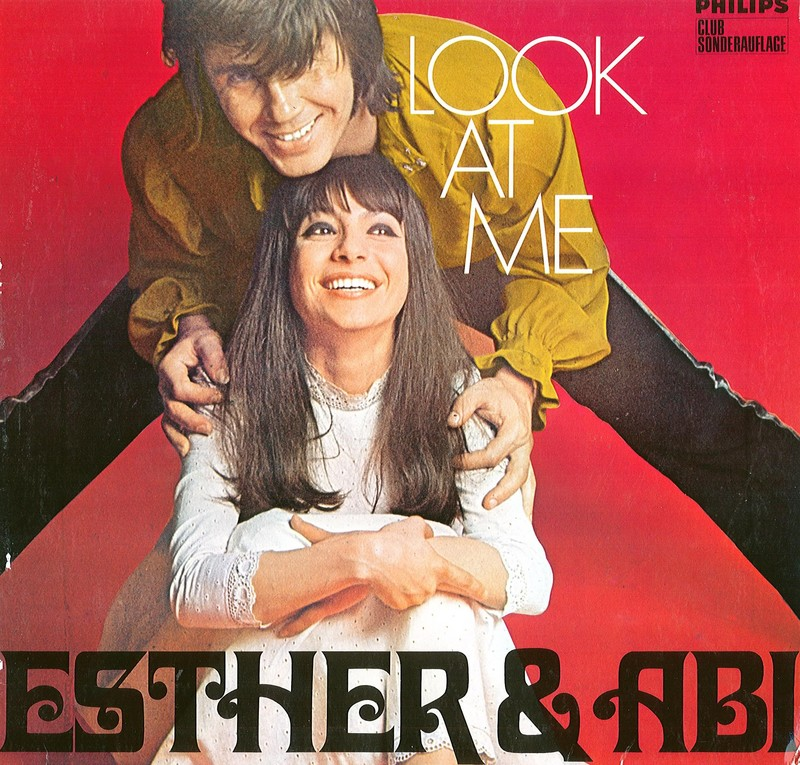

Friday, June the 3rd, 2016
back to: title, date or indexes
Last night, Abi Ofarim was presented with a sheep.
There was a broader context to this exciting scene, but alas it was obliterated the instant I awoke. All that remains is a smiling Abi, circa 1967, taking in his arms a non-smiling sheep.
I would be pleased to hear from any brain-quacks who feel competent to interpret this phantasm.
